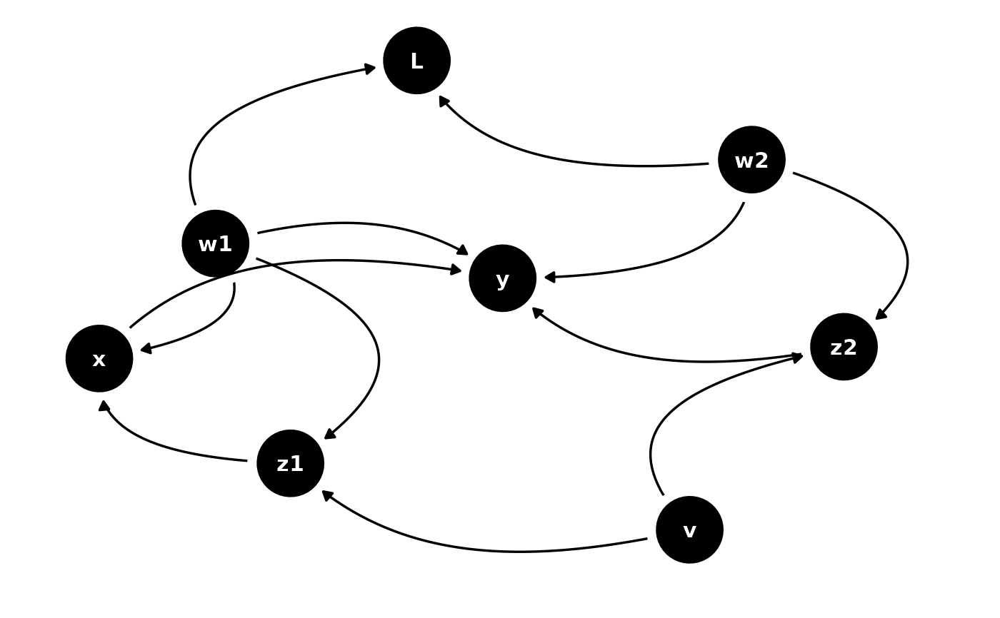
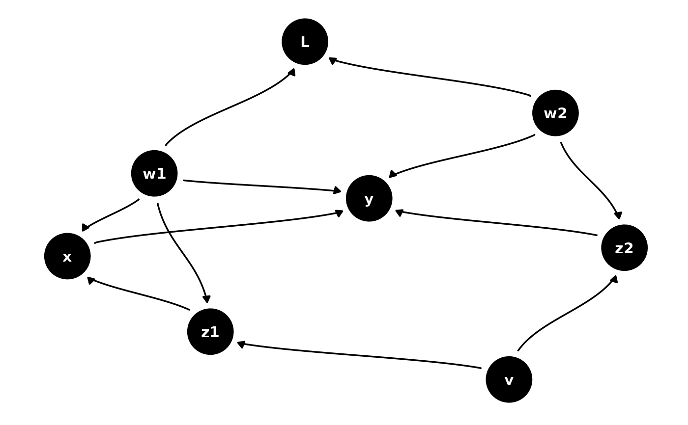

Directed DAG edges
Usage
geom_dag_edges_link(
mapping = NULL,
data = NULL,
arrow = grid::arrow(length = grid::unit(5, "pt"), type = "closed"),
position = "identity",
na.rm = TRUE,
show.legend = NA,
inherit.aes = TRUE,
...
)
geom_dag_edges_arc(
mapping = NULL,
data = NULL,
curvature = 0.5,
arrow = grid::arrow(length = grid::unit(5, "pt"), type = "closed"),
position = "identity",
na.rm = TRUE,
show.legend = NA,
inherit.aes = TRUE,
fold = FALSE,
n = 100,
lineend = "butt",
linejoin = "round",
linemitre = 1,
label_colour = "black",
label_alpha = 1,
label_parse = FALSE,
check_overlap = FALSE,
angle_calc = "rot",
force_flip = TRUE,
label_dodge = NULL,
label_push = NULL,
...
)
geom_dag_edges_diagonal(
mapping = NULL,
data = NULL,
position = "identity",
arrow = grid::arrow(length = grid::unit(5, "pt"), type = "closed"),
na.rm = TRUE,
show.legend = NA,
inherit.aes = TRUE,
curvature = 1,
n = 100,
lineend = "butt",
linejoin = "round",
linemitre = 1,
label_colour = "black",
label_alpha = 1,
label_parse = FALSE,
check_overlap = FALSE,
angle_calc = "rot",
force_flip = TRUE,
label_dodge = NULL,
label_push = NULL,
...
)
geom_dag_edges_fan(
mapping = NULL,
data = NULL,
position = "identity",
arrow = grid::arrow(length = grid::unit(5, "pt"), type = "closed"),
na.rm = TRUE,
show.legend = NA,
inherit.aes = TRUE,
spread = 0.7,
n = 100,
lineend = "butt",
linejoin = "round",
linemitre = 1,
label_colour = "black",
label_alpha = 1,
label_parse = FALSE,
check_overlap = FALSE,
angle_calc = "rot",
force_flip = TRUE,
label_dodge = NULL,
label_push = NULL,
...
)Arguments
- mapping
Set of aesthetic mappings created by aes() or aes_(). If specified and inherit.aes = TRUE (the default), it is combined with the default mapping at the top level of the plot. You must supply mapping if there is no plot mapping.
- data
The data to be displayed in this layer. There are three options: If NULL, the default, the data is inherited from the plot data as specified in the call to ggplot(). A data.frame, or other object, will override the plot data. All objects will be fortified to produce a data frame. See fortify() for which variables will be created. A function will be called with a single argument, the plot data. The return value must be a data.frame., and will be used as the layer data.
- arrow
specification for arrow heads, as created by arrow()
- position
Position adjustment, either as a string, or the result of a call to a position adjustment function.
- na.rm
If FALSE (the default), removes missing values with a warning. If TRUE silently removes missing values
- show.legend
logical. Should this layer be included in the legends? NA, the default, includes if any aesthetics are mapped. FALSE never includes, and TRUE always includes. It can also be a named logical vector to finely select the aesthetics to display.
- inherit.aes
If FALSE, overrides the default aesthetics, rather than combining with them. This is most useful for helper functions that define both data and aesthetics and shouldn't inherit behaviour from the default plot specification, e.g. borders().
- ...
Other arguments passed to ggraph::geom_edge_*()
- curvature
The bend of the curve. 1 approximates a halfcircle while 0 will give a straight line. Negative number will change the direction of the curve. Only used if layout circular = FALSE.
- fold
Logical. Should arcs appear on the same side of the nodes despite different directions. Default to FALSE.
- n
The number of points to create along the path.
- lineend
Line end style (round, butt, square).
- linejoin
Line join style (round, mitre, bevel).
- linemitre
Line mitre limit (number greater than 1).
- label_colour
The colour of the edge label. If
NAit will use the colour of the edge.- label_alpha
The opacity of the edge label. If
NAit will use the opacity of the edge.- label_parse
If
TRUE, the labels will be parsed into expressions and displayed as described ingrDevices::plotmath().- check_overlap
If
TRUE, text that overlaps previous text in the same layer will not be plotted.check_overlaphappens at draw time and in the order of the data. Therefore data should be arranged by the label column before callinggeom_text(). Note that this argument is not supported bygeom_label().- angle_calc
Either 'none', 'along', or 'across'. If 'none' the label will use the angle aesthetic of the geom. If 'along' The label will be written along the edge direction. If 'across' the label will be written across the edge direction.
- force_flip
Logical. If
angle_calcis either 'along' or 'across' should the label be flipped if it is on it's head. Default toTRUE.- label_dodge
A
grid::unit()giving a fixed vertical shift to add to the label in case ofangle_calcis either 'along' or 'across'- label_push
A
grid::unit()giving a fixed horizontal shift to add to the label in case ofangle_calcis either 'along' or 'across'- spread
Deprecated. Use
strengthinstead.
Aesthetics
geom_dag_edges_link, geom_dag_edges_arc, geom_dag_edges_diagonal, and
geom_dag_edges_fan understand the following aesthetics. Bold aesthetics are
required.
x
y
xend
yend
edge_colour
edge_width
edge_linetype
edge_alpha
start_cap
end_cap
label
label_pos
label_size
angle
hjust
vjust
family
fontface
lineheight
geom_dag_edges_arc and geom_dag_edges_diagonal also require
circular, but this is automatically set.
geom_dag_edges_fan requires to and from, but these are also
automatically set.
Examples
library(ggplot2)
p <- dagify(
y ~ x + z2 + w2 + w1,
x ~ z1 + w1,
z1 ~ w1 + v,
z2 ~ w2 + v,
L ~ w1 + w2
) %>%
ggplot(aes(x = x, y = y, xend = xend, yend = yend)) +
geom_dag_point() +
geom_dag_text() +
theme_dag()
p + geom_dag_edges_link()
p + geom_dag_edges_arc()

p + geom_dag_edges_diagonal()

p + geom_dag_edges_fan()